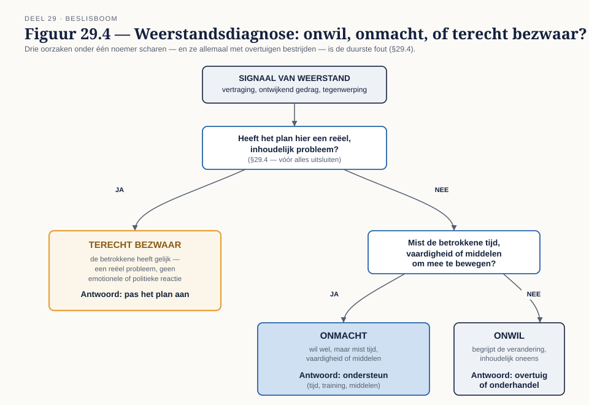
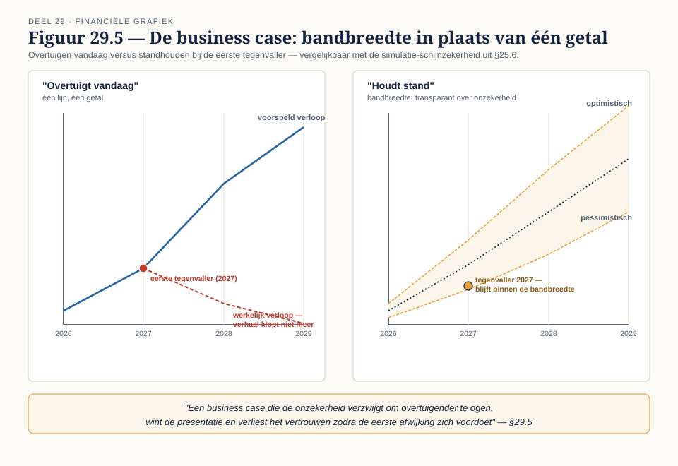

Deel 29 — Transformatie leiden
Slidedeck · Ductus-cursus BPMN, CMMN & DMN · niveau 3 · deel 29 van 30 · 26 slides
Slide 1 — Titelslide
Transformatie leiden — Deel 29
Beeldmerk, cursustitel
Spreeknotitie: Van ontwerp naar leiderschap. Geen ontwerp implementeert zichzelf.
Slide 2 — Wat je tot nu toe hebt
Architectuur, referentiemodel, nulmeting, control, beslisarchitectuur, ACM-ontwerp
De zes voorgaande delen kort op een rij
Spreeknotitie: Dit deel maakt het realiseerbaar.
Slide 3 — Leerdoelen
Na dit deel kun je…
Vijf leerdoelen uit de reader
Spreeknotitie: Kort.
Slide 4 — Target operating model
Organisatie · technologie · data · sturing · processen
 Figuur 29.1, leeg
Figuur 29.1, leeg
Spreeknotitie: Procesmodellen zijn één component, niet het hele TOM.
Slide 5 — Opdracht 1
Het TOM voor Meridiaan na de transitie — de deliverable
Werkboekverwijzing, timer 30 minuten
Spreeknotitie: Individueel.
Slide 6 — Van architectuur naar roadmap
Fasering, afhankelijkheden, kritiek pad
 Figuur 29.2, leeg
Figuur 29.2, leeg
Spreeknotitie: Alles parallel plannen faalt altijd — capaciteit is niet oneindig.
Slide 7 — Twee programma's, één capaciteit
Het resterende Mutatieplatform én de stelselovergang
Herinnering aan casusdossier §8
Spreeknotitie: Een roadmap die deze competitie negeert, is een wensenlijst.
Slide 8 — Opdracht 2
Bouw de roadmap — de kerndeliverable
Werkboekverwijzing, timer 55 minuten
Spreeknotitie: Individueel.
Slide 9 — Prioriteren onder onhaalbaarheid
De kernvaardigheid van niveau 3
 Figuur 29.3, leeg
Figuur 29.3, leeg
Spreeknotitie: Geen ontwerp dient alle belangen tegelijk.
Slide 10 — Vier belanghebbenden, vier voorkeuren
Wie wil dat wát wijkt?
Herinnering aan casusdossier §9
Spreeknotitie: Elk belanghebbende wil dat een ander onderdeel wijkt dan het onderdeel dat hen raakt.
Slide 11 — Weerstand: drie oorzaken
Onwil · onmacht · terecht bezwaar

Figuur 29.4, leeg
Spreeknotitie: Alle drie onder één noemer scharen is de duurste fout in transformatieleiderschap.
Slide 12 — Opdracht 4
Weerstandsdiagnose — vijf situaties
Werkboekverwijzing, timer 20 minuten
Spreeknotitie: Individueel. Durf "terecht bezwaar" te concluderen.
Slide 13 — Opdracht 3
De termijn krimpt met een derde — wat wijkt?
Werkboekverwijzing, timer 45 minuten
Spreeknotitie: Tweetallen, rollenspel: programmadirecteur tegenover de vier belanghebbenden.
Slide 14 — Geen compromis, een keuze
"We doen alles iets sneller" is geen prioritering
—
Spreeknotitie: Een echte keuze laat iemand daadwerkelijk iets inleveren.
Slide 15 — De business case
Overtuigen — of standhouden?

Figuur 29.5, leeg
Spreeknotitie: Onzekerheid verzwijgen wint de presentatie, verliest het vertrouwen.
Slide 16 — Herhaling: schijnzekerheid
Herinnering aan deel 25, §25.6
—
Spreeknotitie: Precisie is geen betrouwbaarheid, ook niet in een investeringsvoorstel.
Slide 17 — Opdracht 5
Eén business case — de deliverable
Werkboekverwijzing, timer 35 minuten
Spreeknotitie: Individueel.
Slide 18 — Scopebewaking
De termijn wijkt niet — dus de scope moet
—
Spreeknotitie: Vastgelegd, niet stilzwijgend verschoven.
Slide 19 — Het gesprek met de directie
Andere taal, andere vragen
—
Spreeknotitie: Halen we de datum, wat kost het, wat is het risico.
Slide 20 — Wat je niet moet zeggen
Jargon zonder vertaling · weggepoetste onzekerheid · "weerstand" als containerbegrip
—
Spreeknotitie: Drie concrete valkuilen om te vermijden.
Slide 21 — Opdracht 6
Schrijf de openingsvijf minuten
Werkboekverwijzing, timer 20 minuten
Spreeknotitie: Individueel.
Slide 22 — Opdracht 7
Stellingen
Vier stellingen uit het werkboek
Spreeknotitie: Plenair.
Slide 23 — De rode draad van niveau 3
Elke keuze heeft een prijs — hier op ondernemingsschaal
—
Spreeknotitie: Wat vandaag geoefend is, is de kern van de masterproef.
Slide 24 — Terugblik
Van TOM tot directiegesprek
—
Spreeknotitie: Kort.
Slide 25 — Vooruitblik
Deel 30 — De masterproef
Aankondiging: alles gebundeld, verdedigd voor een simulatie van de raad van bestuur
Spreeknotitie: Vier vragen vooraf gedeeld, vier niet.
Slide 26 — Vragen
Vragen over deel 29?
—
Spreeknotitie: Ruimte voor open vragen voordat de masterproef start.